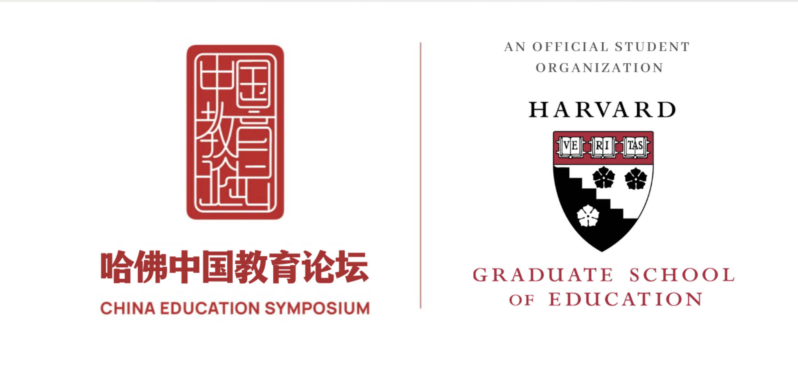
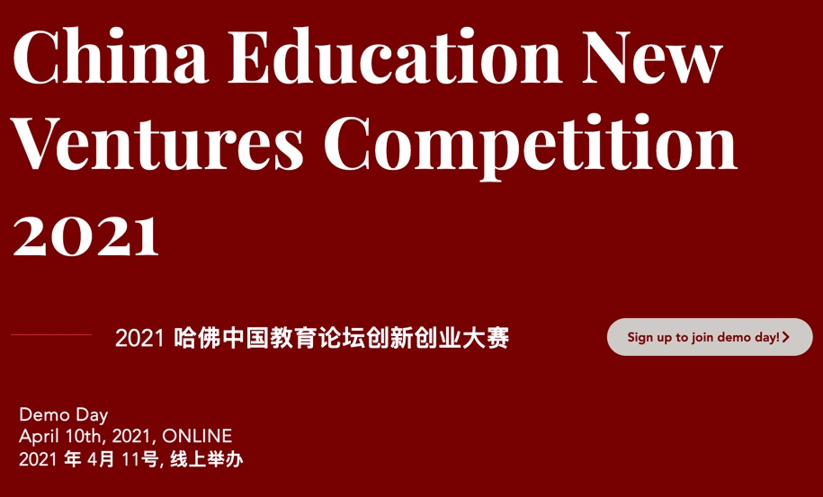
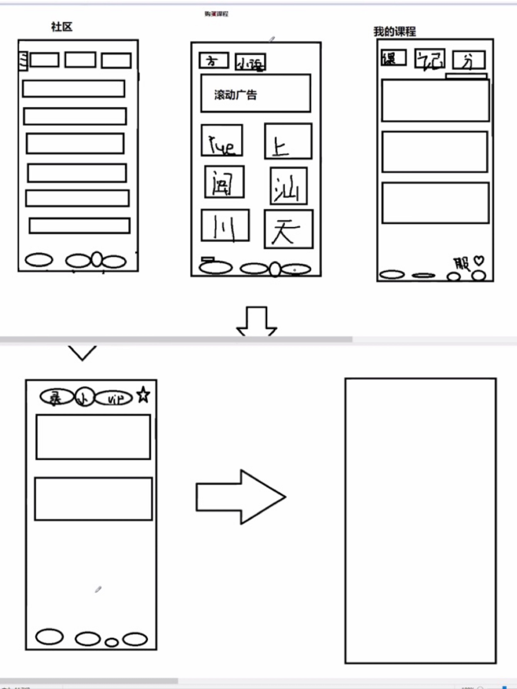
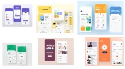
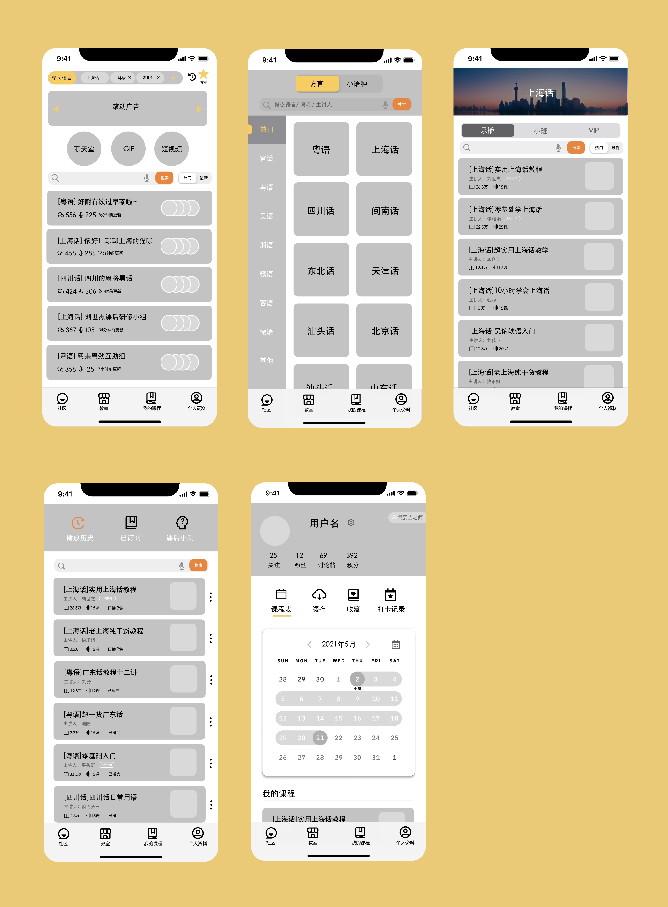
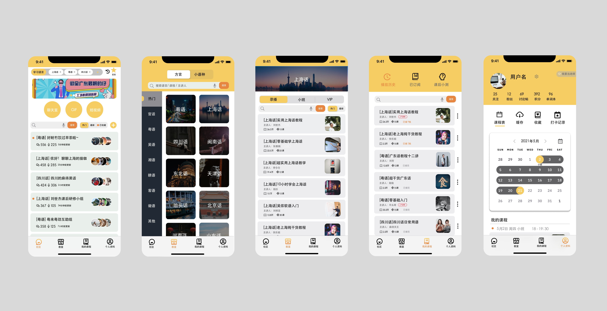

Difining E-commerce and Language learning App
Harvard CES – China Education New Ventures Competition 2021
Background
In the spring of 2021, I formed a team with four students from the University of California and McGill University studying Education, Informatics, Psychology and Financial mathematics, designed an app to participate in the first session of The Education New Ventures Competition held by Harvard China Education Symposium.
About Harvard CES
 
(https://edsecondary.fas.harvard.edu/links/china-education-symposium)
The China Education Symposium (CES) was founded in 2010 by students at Harvard and has been officially recognized by the Harvard Graduate School of Education (HGSE) ever since. Our mission is to provide a platform for students, scholars, policy makers, and frontline practitioners to come together, discuss, and support the development of education in China. Currently, we have more than 2000 members domestically and internationally and 8000 followers on social media. Our organization particularly attracts those who are passionate about and are committed to making a difference in the current educational landscape of China.
My Role
I am the only UI/UX designer in the group, responsible for the design of the entire App and assisting in the writing of business plans.
Determine the content of the app
We first determined that the scope of the App is a software for language learning. Then we spent nearly two months searching for information and brainstorming from all walks of life, and found the needs of users to learn dialect languages, and ranked these dialects according to their priority. It also counted the difficulties users have in learning dialects in daily life.
Sketches
The main functions of this App are divided into two: to enhance the enthusiasm of learning, and to provide teaching resources.
In order to enhance enthusiasm, the main function of the software is positioned in the community communication group, hoping to achieve stronger user stickiness by promoting communication between people.
On the other hand, we are a platform that supports teachers to upload both free and paid versions of instructional videos, therefore providing lots of resources.
In the process of considering user Work flow, we drew many sketches together.
(Some of the Sketches)
User Interface
I collected some other language learning software and showed them to the team members.
After discussion, most people agreed that this app hopes to create a warm atmosphere for users, so warm colors should be used as the primary color.
A light green has been used in the community discussion area because we hope it could create a peaceful and tolerant atmosphere.
Low-fi Prototype
After 6 rounds of discussions on Sketch, the Low-fi mockup was finalized.
High-fi Prototype
After two rounds of revision, the High-fi mockup was completed.
Business Plan
I helped the team design the visual effects of the PPT. At the same time, as the only member of the team who had worked in the Tech company, I assisted in writing the business model, equity planning and financing plan.
What I Learned
This experience gave me an understanding of the needs of users for apps in different countries and cultural backgrounds.
It also allowed me to learn the experience of communicating with team members of different backgrounds, the knowledge of bringing projects to market, and the writing methods of business plans.
On the other hand, the competition jury's suggestions also gave me new inspirations: people should have a long-term vision when making softwares. For example, the most important thing for educational software is to achieve the purpose of education. On the one hand, it considers industrialization, and on the other hand, it must consider the public welfare, and bring better quality educational resources to more people.
Next Steps
Because the projects that won the finals have already landed and have a certain user base, we did not enter the final rounds. We are still looking for more people to participate in this project, especially developers, to improve this App together and put it into operation.
If the dialect learning part goes well, we plan to open up more world language learning systems in the future.